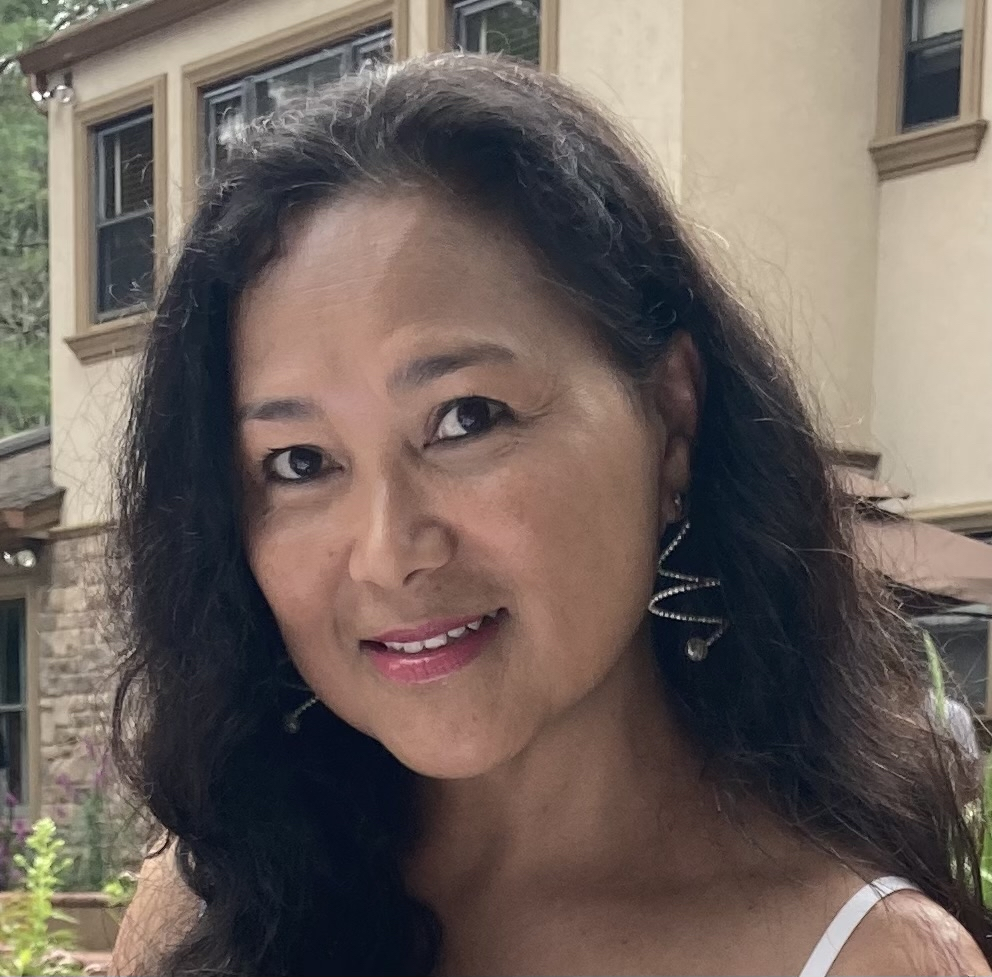

Back
Lidy Chan

Lidy is the Risk Financing Manager at Massachusetts Department of Transportation (MassDOT). She is responsible for managing elements of the Department’s risk financing programs, including insurance programs and loss exposures, procurement and underwriting, cost of risk analysis and budgeting, and more.
She has been in this position as a Risk Financing Manager for over 15 years overseeing the Risk Management and Insurance Programs of MassDOT where she is responsible for a department budget of approximately $4M a year. Lidy’s responsibilities include but not limited to the following:
- Purchases of various insurance policies as needed to mitigate agencies risk on toll roadway system.
- Determine amount of insurance to purchase based on historically analysis of claims liability on the toll roadway system and maintains catastrophic insurance coverage to meet the financial needs of MassDOT.
- Coordination of claims and loss prevention activities.
- Budgeting, accounting and analysis of risk and insurance costs.
- Develop, implement and maintain insurance or self-insurance programs for property, liability, and certain other enterprise risks.
- Coordinate property loss control services provided by brokers, and insurers.
- For property losses covered by insurance, coordinate efforts to recover amounts due from the insurance company.
- Handle Excess WC claims (MTA only) reporting of excess claims as required by policy conditions to ensure recovery of amounts due from the insurer
- Assist and support safety and security with regard to minimizing loss exposures
- For third party claims, coordinate efforts that will lead to discharge by the insurance company of its obligation to pay or reimburse MassDOT for defense and claims costs.
- Handle insurance coverage disputes, working with Legal as appropriate.
- Support Legal, Purchasing, Contract Administration and Departments in the area of contractual risk transfer.
- Coordinate execution of the overall Risk Management process.
Prior to joining MassDOT, she worked for Bechtel/Parsons Brinkerhoff (B/PB, a joint venture) responsible for managing the Central Artery Project (aka as “The Big Dig Project”). At B/PB, Lidy was a Fiscal Project Manager for 14 years responsible for securing the $14.8B funding both federal and state. She joined B/PB as an intern working for estimating and scheduling department. Her tenacity, hard work, and dedication to the Project has led her to numerous positions such as Cost Engineer, Accounts Payable Manager where she became the youngest head of the department in the history of the Project.
She was the recipient of the “Financial Management Award” given by Mass Move 2000 and the City of Boston. She has also received numerous other awards, such as the “Special Achievement Award” and “Leadership Award” for her advocacy within the Asian-American Pacific Islander (AAPI) community.
She is currently involved in MassDOT’s various programs just to name a few – serving as a mentor, committee member for the Partners in Transportation Diversity Planning Committee, chair of the AAPI Heritage month celebration, member for the Diversity, Equity, and Inclusion (DEI) Employee Advisory Council and most recently a member of the MassDOT/Massachusetts Bay Transportation Authority (MBTA) Employee Resource Group (ERG) Council.
Lidy is also very active in the community and beyond – a member of AAPI Action Group, and currently serves as a Conference of Minority Transportation Officials (COMTO) Boston Chapter President as well as Council of Presidents representative/Board Member of COMTO National.